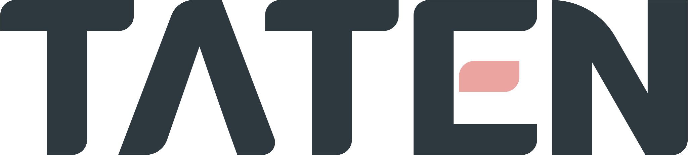

About Me
Hi, I'm Yaten-Z.
I am an passionate learner with a keen interest in technology, currently exploring a wide range of programming fields. From Python to C++, from HTML, CSS, and JavaScript to Linux, I approach each technology with curiosity and enthusiasm. I believe that technology not only enables creative implementation but also enhances problem-solving efficiency. Through participating in projects such as anonymous message boards, personal blogs, and team websites, I have gradually developed the ability to think from scratch and bring projects to life. Each project is a continuous process of reflection and improvement.
Beyond technology, I have a passion for music and copywriting. These interests have taught me how to observe the world, discover patterns and contrasts, and pursue balance and harmony—qualities that equally apply to code design.
The TATEN Team, where I belong, is a vibrant computer science learning and exchange community composed of middle school and university students. TATEN is a dynamic platform that brings together tech enthusiasts from diverse backgrounds.
I maintain curiosity towards new things. Quirky creative ideas, unexplored technical fields, and interesting collaboration opportunities—all these excite me. If you're interested in code, design, or any creative projects, I'd love to connect with you.
It's just finding words to match words, one person thinking with another.
But in this process, it seems we can do something.
Interests
Foodie, Learning, Coding


Team 
I'm part of the TATEN Team: a group of students passionate about programming and creation.
We are dedicated to exploring the frontiers of computer science, sharing knowledge and experience, and growing together. Here, everyone can find their own technical path—from systems programming to front-end development, from algorithmic competitions to innovative projects. We connect the world through code and change the future with technology.
TATEN
On the other side of the network, we meet;
Between code and dreams, we move forward together
Projects
- [My Blog] — Hexo + Butterfly, recording thoughts and growth
- [NeoPage] — Lightweight personal homepage template
- [TATEN] — Computer science exchange team
- [GuYang17's Blog] — Building tech blogs